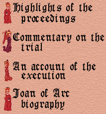

|
During the first five months of 1431, 19-year-old Joan of Arc, a barely literate peasant maiden who became a French military hero, was tried, convicted, and executed on charges related to heresy in the city of Rouen.
Joan became famous in 1429 after she led French troops in breaking the English siege of Orléans, where she acquired the nickname Maid of Orléans. After her victory, Joan led France's crown prince to Reims, where he was crowned King Charles VII. Charles had declared himself king in 1422. But he had never had a coronation because the cathedral at Reims, where French kings are traditionally crowned, lay in English territory. In 1430, French supporters of the English captured Joan at Compiègne and sold her to the Duke of Bedford, the English ruler of northern France. Instead of trying her as a prisoner of war, the English handed her over to the Roman Catholic Church to be tried by the Inquisition as a witch and a heretic. Conviction on either of these charges could bring a death sentence. And the Inquisition judges, who were supporters of the English, set out to do just that. To their frustration, their preliminary investigation gathered only reports of Joan's piety and virtue, so they turned elsewhere to prove her guilt. Linger over these pages to learn of Joan's trial and tragic fate.

|
|